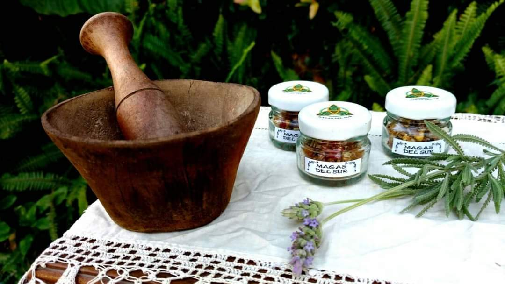
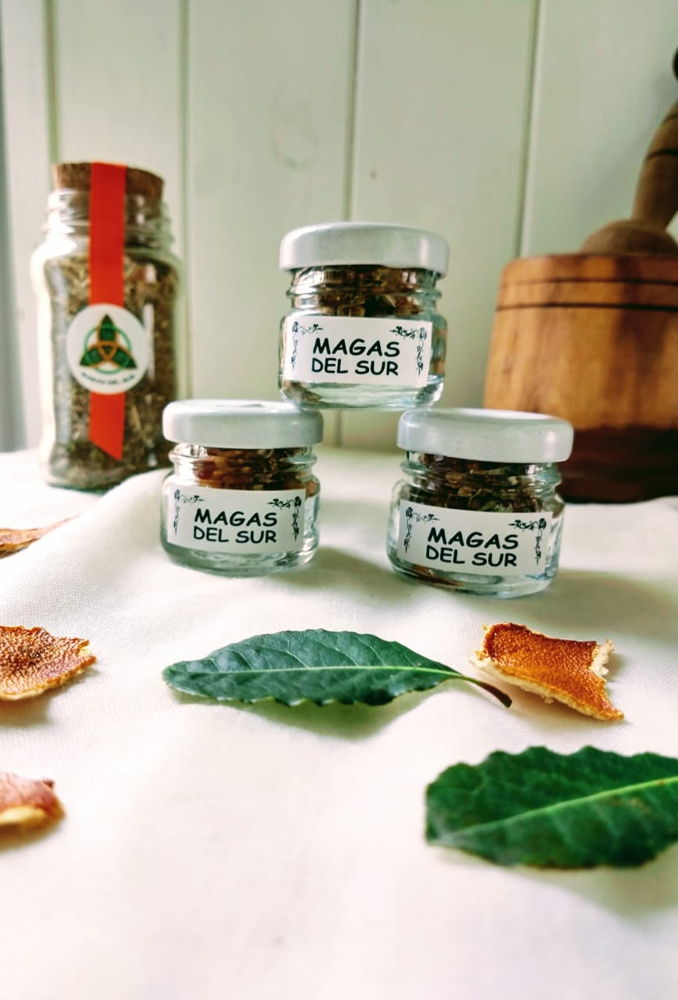
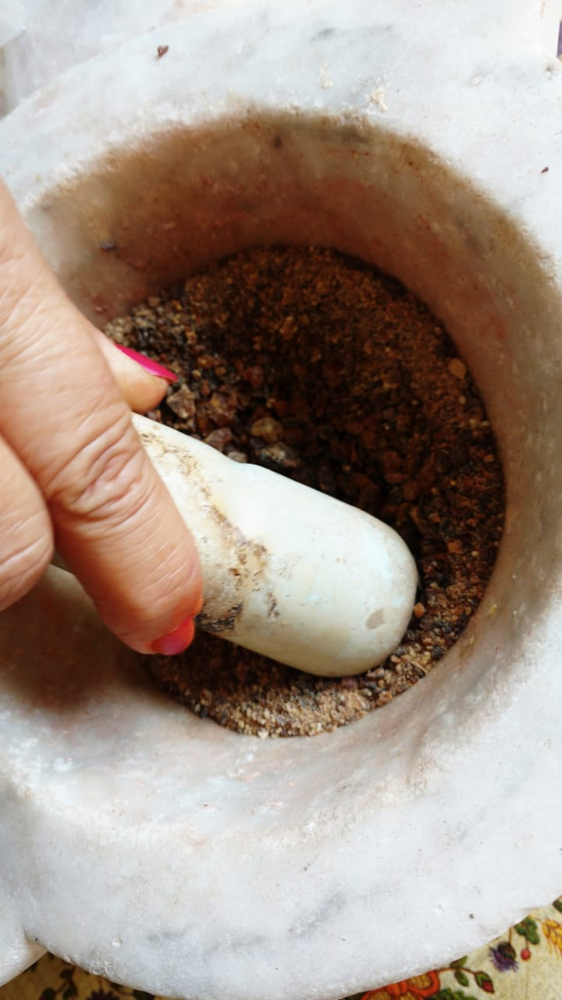
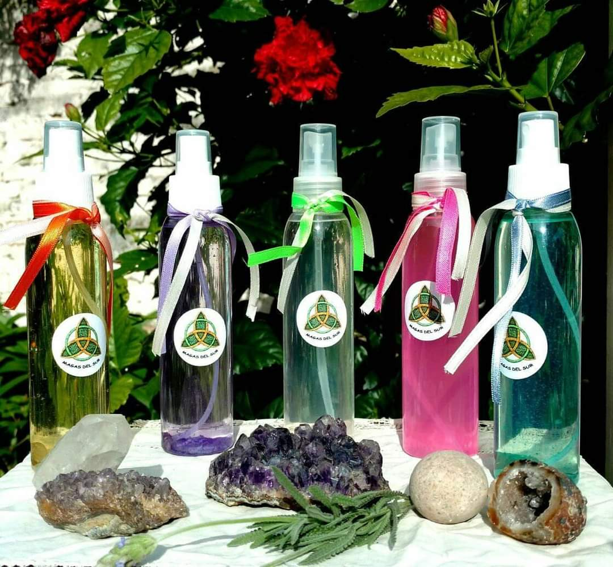
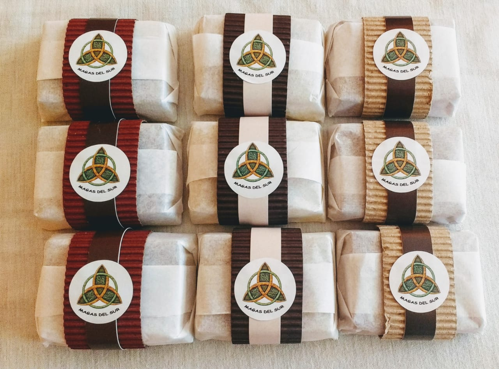
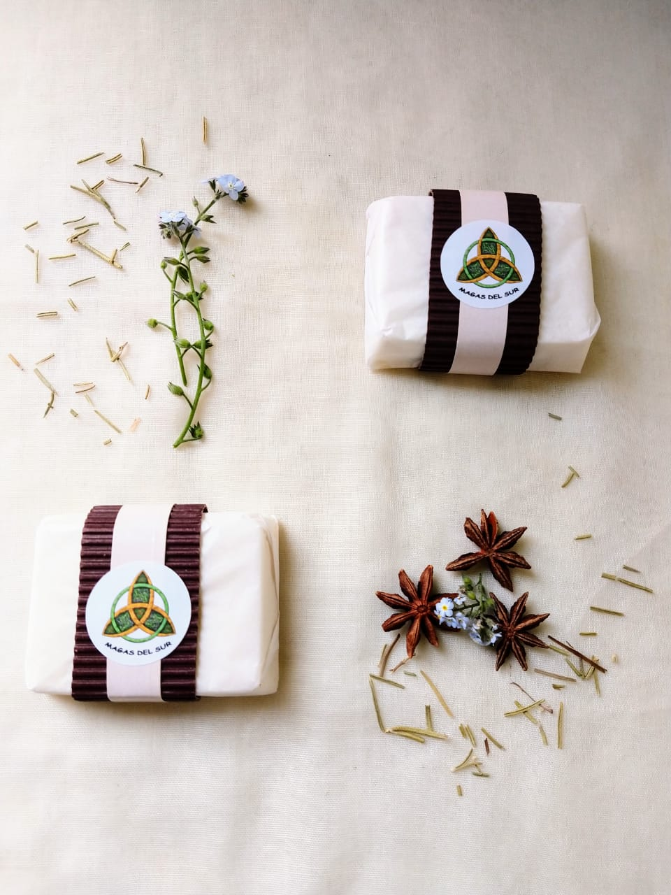
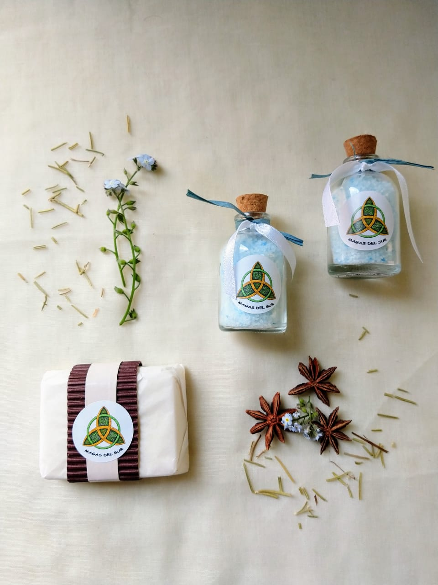
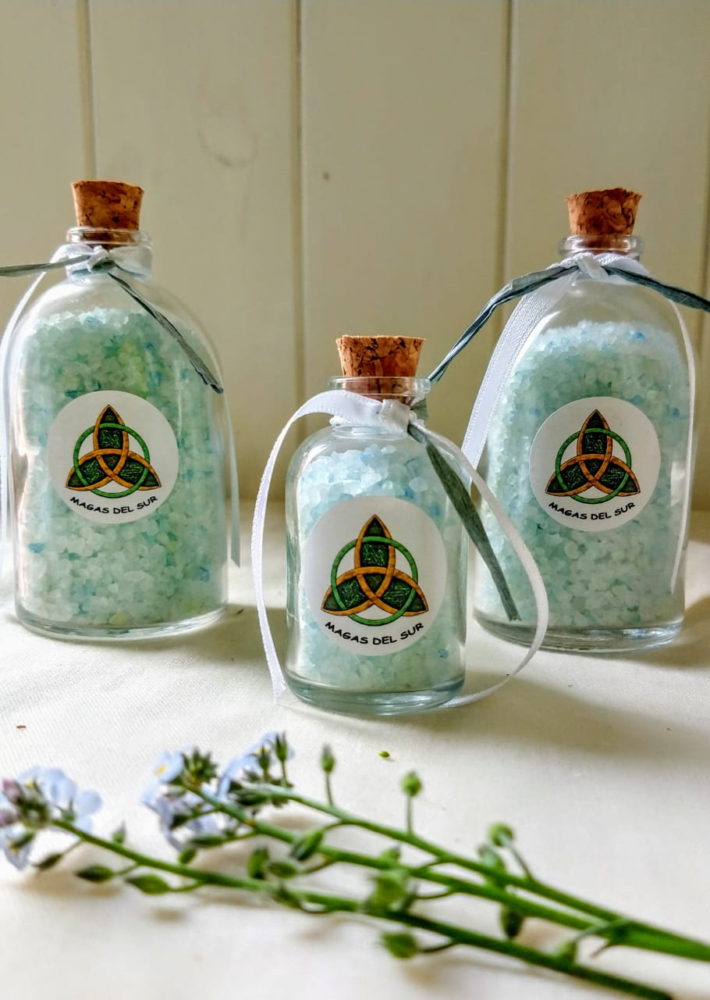
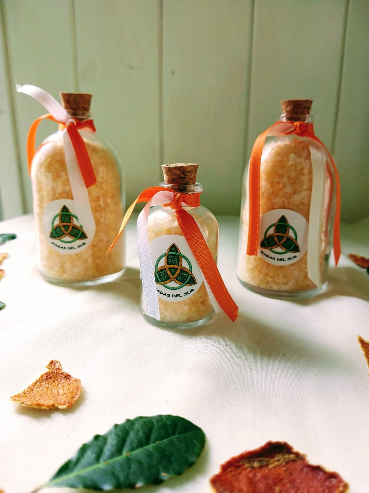
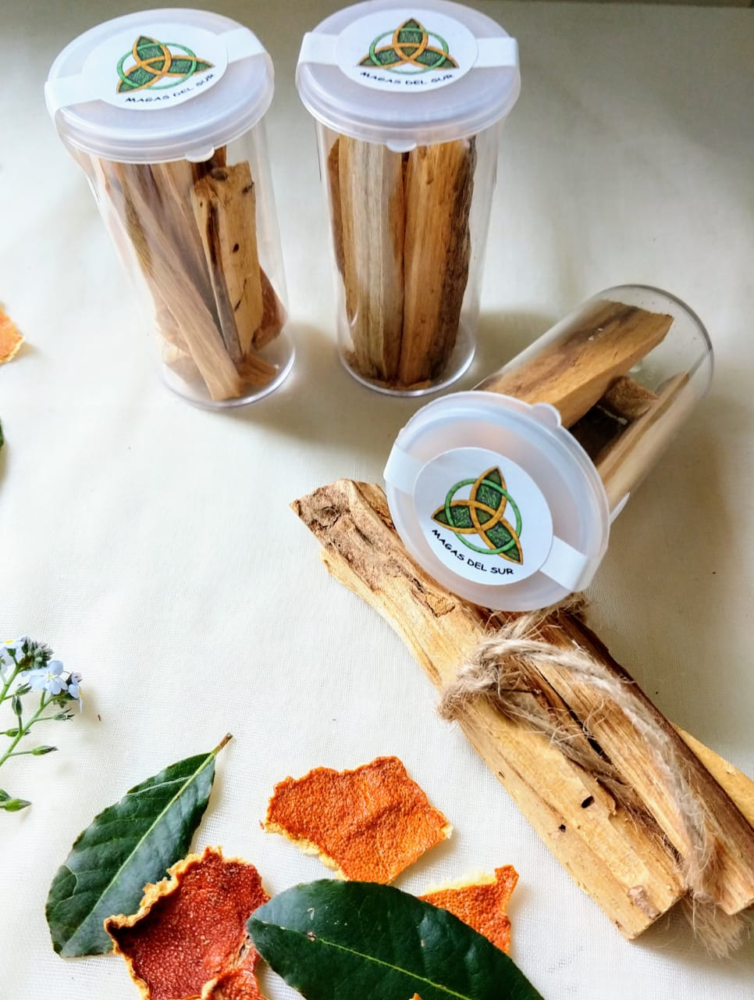

Magas del Sur es una empresa formada por mí y un círculo de mujeres
alquimistas que se unieron para recrear antiguas recetas mágicas que
permiten hacer la vida más sana y vivir en un estado de eterna juventud.
Magas del sur trabaja en el Sur del Planeta, desde Argentina para el mundo.
Los productos manufacturados por Magas del Sur, están elaborados con
aceites esenciales y elementos naturales puros, seleccionados
minuciosamente siguiendo recetas alquímicas específicas para funciones
determinadas como la limpieza y liberación energética, la abundancia, la
armonía y la plenitud.
Todos los productos son confeccionados en estado meditativo y en comunión
espiritual con los elementales del aire, fuego, tierra y agua, y seres de
los planos elevados del alma.
Nuestros productos son:
Pastas Alquímicas

Las pastas alquímicas son preparados hechos de resinas, especias y aceites
esenciales molidos en el mortero.Las pastas alquímicas se colocan sobre un
carbon vegetal ...
encendido, el cual con el calor hace entrar en combustión la
pasta la cual emana humos perfumados que abrazan todos los ambientes para
lograr los objetivos de acuerdo a la fragancia que se seleccione.


Funciones de las pastas alquímicas:
Liblim: Es una fragancia para la limpieza y liberación de energía. Remueve
profundamente bloqueos, limitaciones y miedos.
Abuar: Es una fragancia para dar armonía y abrir las puertas a la
abundancia en todos los niveles. Abundancia de conocimientos, de paz, de
trabajo, de remuneraciones.
Alam: Es una fragancia que tiene combinaciones de esencias que darán
alegría, y amor. Apertura a otros seres.
Jabones y armonizadores alquímicos


Los jabones alquímicos están preparados para ser usados sobre todo tipo de
piel, son de glicerina natural y tienen agregados de aceites esenciales que
provocan diversos efectos según la fragancia seleccionada: DETOX, ALEGRÍA,
AMOR, DULCES SUEÑOS, ANTIESTRES.
Los armonizadores alquímicos son de uso personal, para rociar sobre el
cuerpo o la ropa, al igual que los jabones provocarán el efecto según la
fragancia seleccionada.


Sales de baño alquímicas


Con distintas fragancias, cada una de las sales de baño cumple una función
en particular y son ideales para utilizar en baños de inmersión para el
bienestar personal.
Palo santo peruano

Para el sahumado de ambientes y espacios, renovación de la energía y los
aromas de los mismos.
Todos nuestros productos pueden ser visualizados y encargados a través de
las redes sociales:
Hay muchas acciones que podemos tomar para vivir en abundancia la primera y
más importante es la predisposición a aceptar esa abundancia sin miedos ni
limitaciones.
Podemos atraer la abundancia en la casa colocando canela en platitos en
diferentes lugares sin taparlos. El perfume de la canela abre el ambiente a
la alegría y la abundancia. También pueden hacer hervir ramas de canela con
cascaritas de naranjas, durante algunos minutos para que perfume todo el
ambiente y además poder sentir el placer de beber un rico té lleno de
energía positiva.
También se puede preparar un cacharrito de la abundancia, colocando en un
cacharrito de barro granos de tres colores, por ejemplo podemos guardar
allí granos de maíz, porotos aduki (son de color bordó) y porotos blancos.
A medida que armo este cacharrito de la abundancia voy enviando mis
intenciones, como si las plantara entre las semillas, para que todo
florezca y de abundancia en el hogar.
Formas de descarga energética
Cuando estamos en determinados lugares muy concurridos o simplemente muy
cargados energéticamente suelen presentarse desarmonías en nuestro cuerpo
físico, emocional o mental. Lo mejor que podemos hacer es descargar la
electricidad excedente para volver a estar en sintonía con la paz y la
armonía.
Abrazar un árbol y estar descalzo sobre la tierra es excelente para
descargar energías negativas.
Lo más rápido es descalzarse y sentir como a través de las plantas de los
pies se descarga energía hacia el suelo. Esta energía podemos visualizarla
como proyectándola al centro de la tierra a través de raíces que salen de
nuestros pies. Además agregamos la respiración conciente, absorbiendo
energías de luz del ambiente en donde estemos y descargando por raíces al
exhalar. Realizar este ejercicio durante unos 10 minutos.
Si tienes una bañera entonces a llenarla y coloca sales aromatizadas con
lavanda, rosas, manzanilla. Sino simplemente sal gruesa sin perfume. La
temperatura del agua debe ser tibia y no se debe estar más de 13 minutos
dentro de la bañera. Al salir no secarse con toalla sino dejar que se vaya
evaporando el agua así el resto de sal y perfumes queda en el cuerpo. Luego
si es posible colocar alguna crema corporal con manzanilla.
Limpieza de casas
Juntar en un mortero incienso en grano una cucharada, mirra una cucharita
de te, benjuí una cucharita de café. Mezclar orando para que la pasta se
impregne de la alta vibración de la oración.
Luego encender un carboncito y colocar pasta encima, cuando empiece a
ahumar comenzar a recorrer la casa de derecha a izquierda, pasando por cada
habitación por cada ambiente. Deben estar todas las ventanas y puertas
cerradas para que el humo pueda penetrar en cada rincón. Mientras se sahuma
se puede orar de acuerdo a las creencia que se tengan. Personalmente
utilizo la oración del padre nuestro que considero exorcística. Una vez
terminado se tira el carboncito en el inodoro y se descarga agua para que
circule. Se mantienen por 15 minutos por lo menos las ventanas y puertas
cerradas. Luego sí, ventilar.